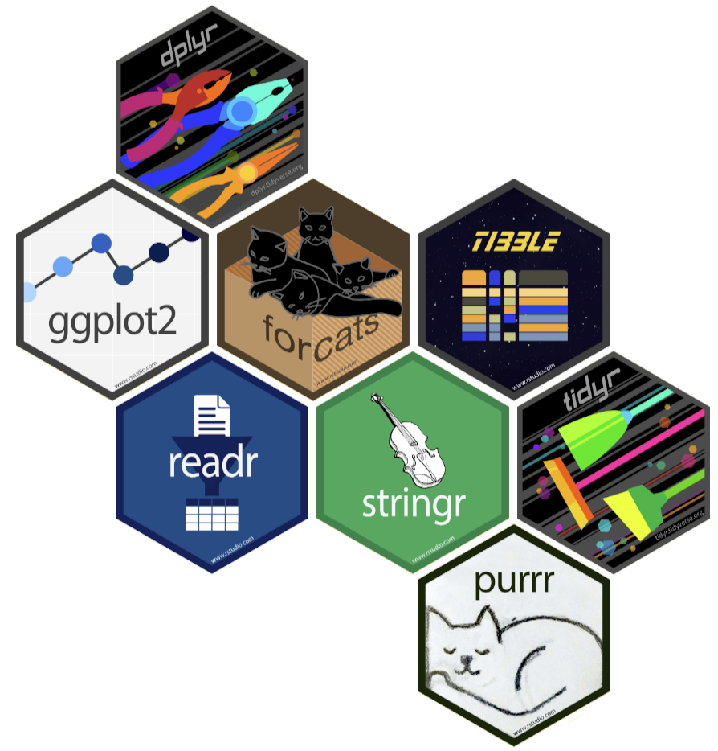
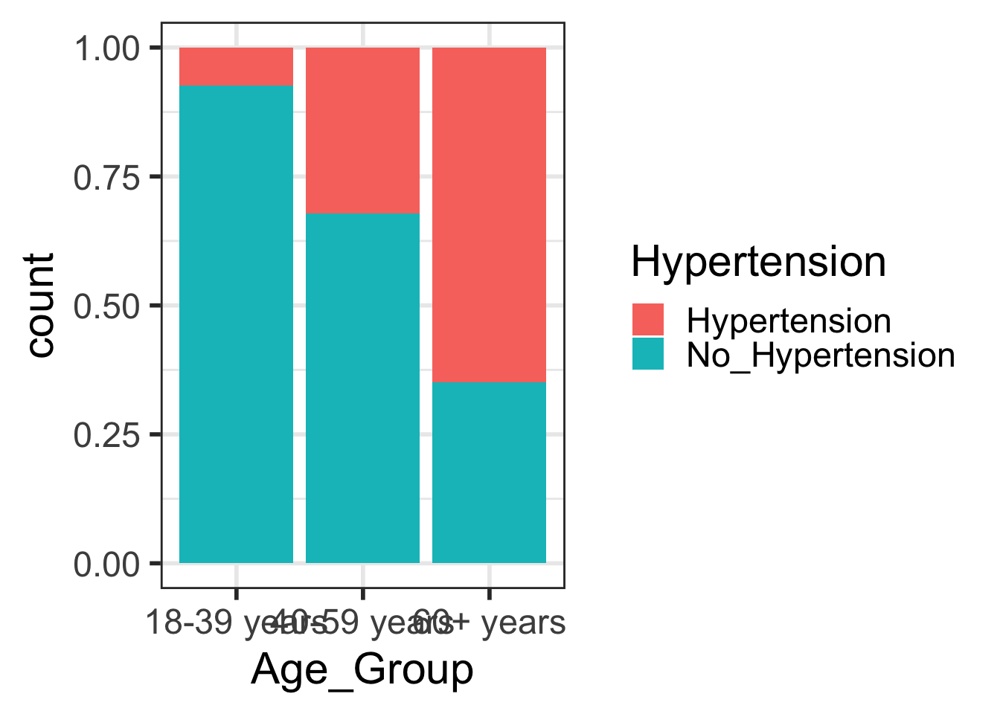

R08: Transforming and subetting data with tidyverse
Introduction to the tidyverse
What is the tidyverse?
The tidyverse is a collection of R packages designed for data science. All packages share an underlying design philosophy, grammar, and data structures.
- ggplot2 - data visualisation
- dplyr - data manipulation
- tidyr - tidy data
- readr - read rectangular data
- purrr - functional programming
- tibble - modern data frames
- stringr - string manipulation
- forcats - factors
- and many more …

Tidy data1

Each variable must have its own column.
Each observation must have its own row.
Each value must have its own cell.
Pipe operator (magrittr)
- The pipe operator (
%>%) allows us to step through sequential functions in the same way we follow if-then statements or steps from instructions
I want to find my keys, then start my car, then drive to work, then park my car.
Nested
park(drive(start_car(find("keys")),
to = "work"))Piped
find("keys") %>%
start_car() %>%
drive(to = "work") %>%
park()Helpful functions for transforming and subsetting
Helpful functions for transforming and subsetting
Data transformation
rename()mutate()pivot_longer()andpivot_wider()
Data subsetting
filter()select()
New dataset: dds.discr
In the US, individuals with developmental disabilities typically receive services and support from state governments
- California allocates funds to developmentally disabled residents through the Department of Developmental Services (DDS)
Dataset
dds.discr- Sample of 1,000 people who received DDS funds (out of a total of ~ 250,000)
- Data include age, sex, race/ethnicity, and annual DDS financial support per consumer
Let’s look back at the dds.discr dataset
- We will load the data (This is a special case!
dds.discris a built-in R dataset)
data("dds.discr")- Now, let’s take a glimpse at the dataset:
glimpse(dds.discr)Rows: 1,000
Columns: 6
$ id <int> 10210, 10409, 10486, 10538, 10568, 10690, 10711, 10778, 1…
$ age.cohort <fct> 13-17, 22-50, 0-5, 18-21, 13-17, 13-17, 13-17, 13-17, 13-…
$ age <int> 17, 37, 3, 19, 13, 15, 13, 17, 14, 13, 13, 14, 15, 17, 20…
$ gender <fct> Female, Male, Male, Female, Male, Female, Female, Male, F…
$ expenditures <int> 2113, 41924, 1454, 6400, 4412, 4566, 3915, 3873, 5021, 28…
$ ethnicity <fct> White not Hispanic, White not Hispanic, Hispanic, Hispani…Helpful functions for transforming and subsetting
Data transformation
rename()
mutate()pivot_longer()andpivot_wider()
Data subsetting
filter()select()
rename(): one of the first things I usually do
I notice that two variables have values that don’t necessarily match the variable name
Female and male are not genders (NIH page on sex and gender)
“White not Hispanic” combines race and ethnicity into one category (APA page on race and ethnicity)
I want to rename gender to sex (not sure if assigned at birth or current sex) and rename ethnicity to R_E (race and ethnicity)
rename(): one of the first things I usually do
rename()can change the name of a columnWe use:
data %>% rename(new_col_name = old_col_name)
dds.discr1 = dds.discr %>%
rename(SAB = gender,
R_E = ethnicity)
glimpse(dds.discr1)Rows: 1,000
Columns: 6
$ id <int> 10210, 10409, 10486, 10538, 10568, 10690, 10711, 10778, 1…
$ age.cohort <fct> 13-17, 22-50, 0-5, 18-21, 13-17, 13-17, 13-17, 13-17, 13-…
$ age <int> 17, 37, 3, 19, 13, 15, 13, 17, 14, 13, 13, 14, 15, 17, 20…
$ SAB <fct> Female, Male, Male, Female, Male, Female, Female, Male, F…
$ expenditures <int> 2113, 41924, 1454, 6400, 4412, 4566, 3915, 3873, 5021, 28…
$ R_E <fct> White not Hispanic, White not Hispanic, Hispanic, Hispani…Helpful functions for transforming and subsetting
Data transformation
rename()
mutate()
pivot_longer()andpivot_wider()
Data subsetting
filter()select()
mutate(): constructing new variables from what you have
We can create a new variable from other variables
- Another way to say it: creates new columns that are functions of existing variables
We often use it like:
data %>% mutate(new_variable = some_transformation_of_another_variable)mutate(): create a new variable from two other variables
I want to make a variable that is the ratio of expenditures over age
dds.discr2 = dds.discr1 %>%
mutate(exp_to_age = expenditures/age)
glimpse(dds.discr2)Rows: 1,000
Columns: 7
$ id <int> 10210, 10409, 10486, 10538, 10568, 10690, 10711, 10778, 1…
$ age.cohort <fct> 13-17, 22-50, 0-5, 18-21, 13-17, 13-17, 13-17, 13-17, 13-…
$ age <int> 17, 37, 3, 19, 13, 15, 13, 17, 14, 13, 13, 14, 15, 17, 20…
$ SAB <fct> Female, Male, Male, Female, Male, Female, Female, Male, F…
$ expenditures <int> 2113, 41924, 1454, 6400, 4412, 4566, 3915, 3873, 5021, 28…
$ R_E <fct> White not Hispanic, White not Hispanic, Hispanic, Hispani…
$ exp_to_age <dbl> 124.2941, 1133.0811, 484.6667, 336.8421, 339.3846, 304.40…Recoding a numeric variable into categorical
Can we recreate age.cohort using the age varible?
summary(dds.discr2) id age.cohort age SAB expenditures
Min. :10210 0-5 : 82 Min. : 0.0 Female:503 Min. : 222
1st Qu.:31809 6-12 :175 1st Qu.:12.0 Male :497 1st Qu.: 2899
Median :55384 13-17:212 Median :18.0 Median : 7026
Mean :54663 18-21:199 Mean :22.8 Mean :18066
3rd Qu.:76135 22-50:226 3rd Qu.:26.0 3rd Qu.:37713
Max. :99898 51+ :106 Max. :95.0 Max. :75098
R_E exp_to_age
White not Hispanic:401 Min. : 27.57
Hispanic :376 1st Qu.:273.88
Asian :129 Median :461.75
Black : 59 Mean : Inf
Multi Race : 26 3rd Qu.:938.12
American Indian : 4 Max. : Inf
(Other) : 5 Recoding a numeric variable into categorical (2/2)
- We can integrate other functions into
mutate() - For example,
case_when()is a helpful function for mapping values to a category
Tidyverse:
dds.discr3 <- dds.discr2 %>%
mutate(
age.cohort2 = case_when(
age <= 5 ~ "0-5",
age <= 12 ~ "6-12",
age <= 17 ~ "13-17",
age <= 21 ~ "18-21",
age <= 50 ~ "22-50",
age >= 51 ~ "51+"
)
)
Have you noticed that I change the number on dds.discr?
- I change the number so that R saves a new dataset
- And I do not overwrite the previous dataset
- Can be annoying, but VERY helpful when you have to go back and change code
- When you run things in real time and troubleshoot, it will be helpful to have different versions of the same dataframe
Helpful functions for transforming and subsetting
Data transformation
rename()mutate()pivot_longer()andpivot_wider()
Data subsetting
filter()
select()
filter(): keep rows that match a condition
- What if I want to subset the data frame? (keep certain rows of observations)
I want to look at the data for people who between 50 and 60 years old
dds.discr4 = dds.discr3 %>%
filter(age >= 50 & age <= 60)
glimpse(dds.discr4)Rows: 23
Columns: 8
$ id <int> 15970, 19412, 29506, 31658, 36123, 39287, 39672, 43455, 4…
$ age.cohort <fct> 51+, 51+, 51+, 51+, 51+, 51+, 51+, 51+, 51+, 51+, 51+, 51…
$ age <int> 51, 60, 56, 60, 59, 59, 54, 57, 52, 57, 55, 52, 59, 54, 5…
$ SAB <fct> Female, Female, Female, Female, Male, Female, Female, Mal…
$ expenditures <int> 54267, 57702, 48215, 46873, 42739, 44734, 52833, 48363, 5…
$ R_E <fct> White not Hispanic, White not Hispanic, White not Hispani…
$ exp_to_age <dbl> 1064.0588, 961.7000, 860.9821, 781.2167, 724.3898, 758.20…
$ age.cohort2 <chr> "51+", "51+", "51+", "51+", "51+", "51+", "51+", "51+", "…Helpful functions for transforming and subsetting
Data transformation
rename()mutate()pivot_longer()andpivot_wider()
Data subsetting
filter()
select()
select(): keep or drop columns using their names and types
- What if I want to remove or keep certain variables?
I want to only have age and expenditure in my data frame
dds.discr5 = dds.discr2 %>%
select(age, expenditures)
glimpse(dds.discr5)Rows: 1,000
Columns: 2
$ age <int> 17, 37, 3, 19, 13, 15, 13, 17, 14, 13, 13, 14, 15, 17, 20…
$ expenditures <int> 2113, 41924, 1454, 6400, 4412, 4566, 3915, 3873, 5021, 28…Resources
dplyr resources
Additional details and examples are available in the vignettes:
and the dplyr 1.0.0 release blog posts:
R programming class at OHSU!
You can check out Dr. Jessica Minnier’s R class page if you want more notes, videos, etc.
The larger tidy ecosystem
Just to name a few…
Credit to Mine Çetinkaya-Rundel
These notes were built from Mine’s notes
Most pages and code were left as she made them
I changed a few things to match our class
Please see her Github repository for the original notes
If time
Tidy data2
Each variable must have its own column.
Each observation must have its own row.
Each value must have its own cell.
How do we make our data tidy??
- From a contingency table, we need to create the dataframe using the counts
- In Lesson 4, we saw this contingency table:
| Age Group | Hypertension | No Hypertension |
|---|---|---|
| 18-39 yrs | 8836 | 112206 |
| 40-59 yrs | 42109 | 88663 |
| 60+ yrs | 39917 | 21589 |
- And then I magically had it in a new format so I could make this plot:
Code
ggplot(data = hyp_data,
aes(x = Age_Group,
fill = Hypertension)) +
geom_bar(position = "fill") 

pivot_*() functions

I used pivot_longer() to create tidy data (1/2)
Note that you won’t be required to use
pivot_longer()- I will give you data in a tidy form
Here’s the original data frame:
hyp_cont <- data.frame(
Age_Group = c("18-39 years", "40-59 years", "60+ years"),
Hypertension = c(8836, 42109, 39917),
No_Hypertension = c(112206, 88663, 21589) )- Note that I use use
data.frame()to make a data frame - Then I can name each column that we saw in the contingency table
- Note that information about hypertension vs no hypertension is split between columns
- And that we only have 3 rows of data to show all 313320 observations
I used pivot_longer() to create tidy data (2/2)
We need to tell pivot_longer():
- Which column must be repeated (pivoted) (all other columns are not repeating)
- The name of the new column that will contain the old variable names
- Where the values in each cell under the old variables will go
hyp_data1 = pivot_longer(
data = hyp_cont,
cols = -Age_Group, # columns to pivot
names_to = "Hypertension", # name of new column for variable names
values_to = "Counts") # name of new column for values
hyp_data1# A tibble: 6 × 3
Age_Group Hypertension Counts
<chr> <chr> <dbl>
1 18-39 years Hypertension 8836
2 18-39 years No_Hypertension 112206
3 40-59 years Hypertension 42109
4 40-59 years No_Hypertension 88663
5 60+ years Hypertension 39917
6 60+ years No_Hypertension 21589One more step to make it tidy
- Aka we need one more step to make it so every row is an observation
- In this case, we want each row to represent data from one person
hyp_data = hyp_data1 %>% uncount(Counts)
head(hyp_data, 10)# A tibble: 10 × 2
Age_Group Hypertension
<chr> <chr>
1 18-39 years Hypertension
2 18-39 years Hypertension
3 18-39 years Hypertension
4 18-39 years Hypertension
5 18-39 years Hypertension
6 18-39 years Hypertension
7 18-39 years Hypertension
8 18-39 years Hypertension
9 18-39 years Hypertension
10 18-39 years Hypertension